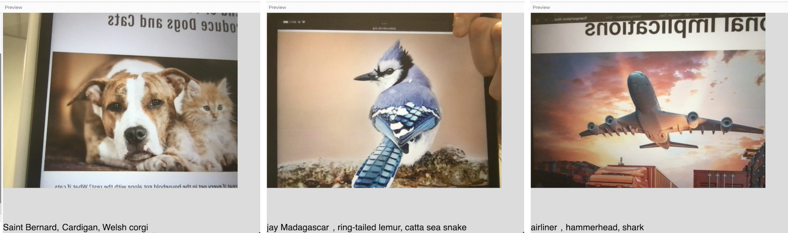
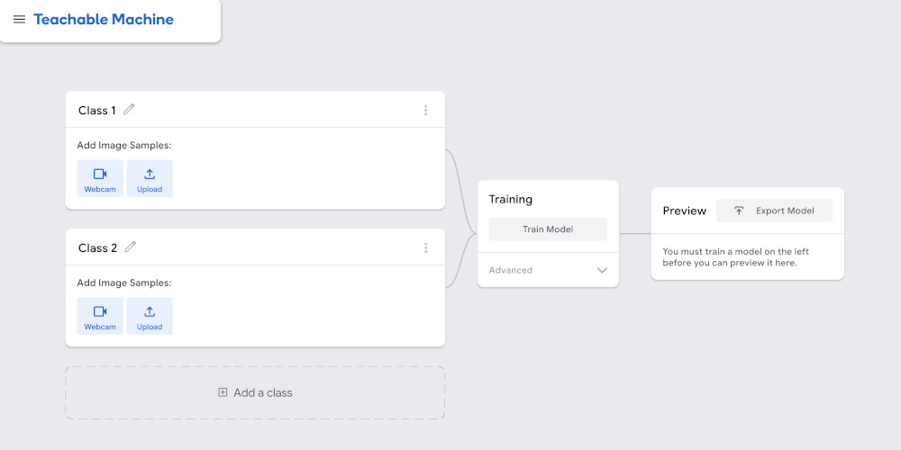
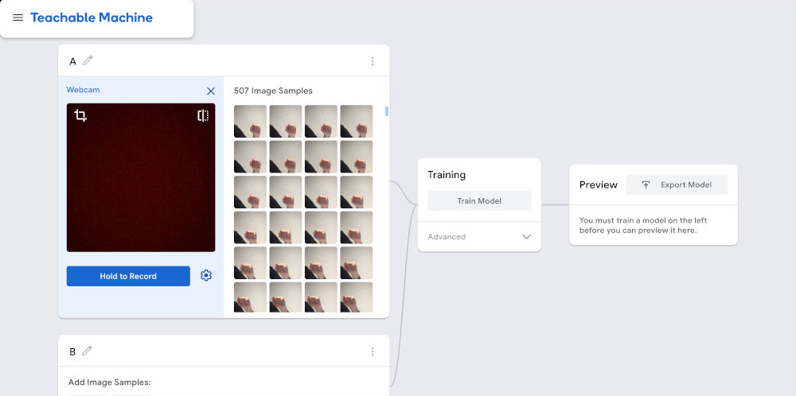
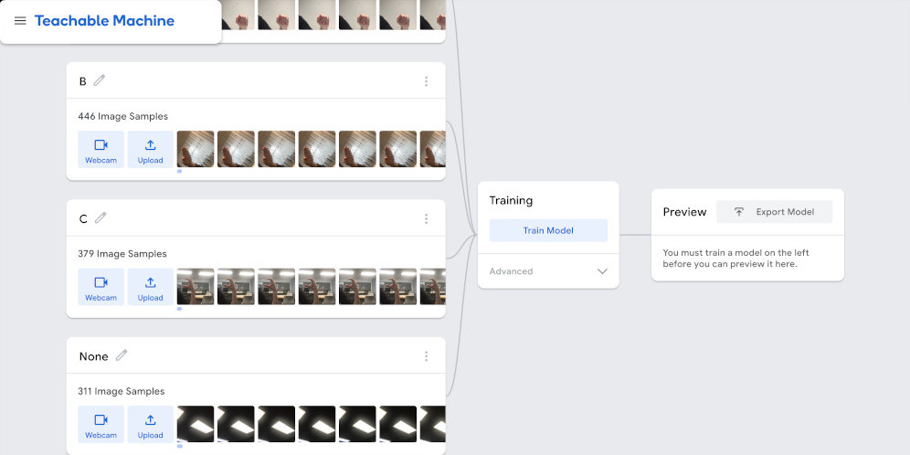
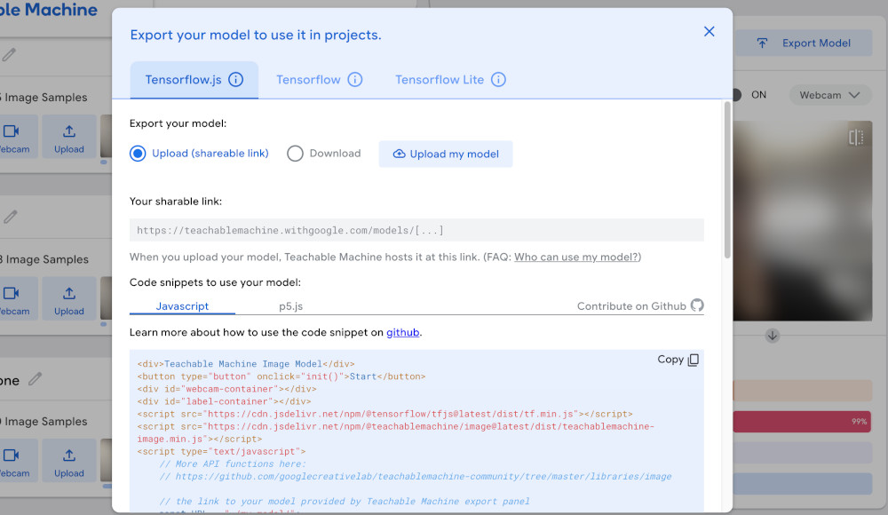
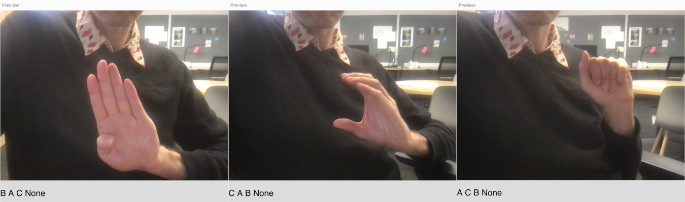

We’ve seen how to use the ml5 library to detect faces and hands on images, and briefly mentioned that it can be used to detect objects or classify images coming from video streams.
Let’s set up a sketch to do classification on a video stream.
We’ll start by modifying our hand detection sketch to work with the camera. We’ll have to add a capture stream, and instead of calling detect() just once on a static image, we’ll have to keep calling detect() every time we’re done detecting. So our detection callback function will look like this now:
function doneDetecting(results) {
mResults = results;
model.detect(mCamera, doneDetecting);
}
Since we’re drawing the video stream at every frame of draw(), and we might be drawing faster than detecting, we can’t rely on drawing the landmarks inside the callback function anymore. What we can do is copy the results of the detection to a global variable to make sure they are available in our draw() function. That’s what mResults = results; is doing.
The rest of the sketch should look very familiar, we run detect(), make the results available globally, and run detect() again. Then, in draw(), we iterate through the latest results and draw landmark points for detected hands:
This works and we could use specific landmark locations to detect basic gestures like pinches or taps.
Let’s try the image classification model from ml5.
Since the ml5 library wraps up a bunch of different models into consistent interfaces, we can swap our hand model for a classification model with some minor changes.
The new model is instantiated like this:
model = ml5.imageClassifier("MobileNet");
And used like this:
model.classify(mCamera, doneDetecting);
The results are not lists of hands or faces and their landmark objects, but lists of detected objects and how confident the model is about its classification of the image. For example:
[
{
"label": "wig",
"confidence": 0.195567
},
{
"label": "mask",
"confidence": 0.026581
},
{
"label": "neck tie",
"confidence": 0.025564
},
]
By default, the model only outputs the top-3 classes, but this can be adjusted with the {topk: K} parameter to the model constructor, where K is an integer that specifies how many classes to report.
Like previously mentioned, the ml5 documentation doesn’t really specify which version of MobileNetV2 was used, nor does it specify which classes this model detects.
The wig, mask, neck tie result was for a picture of a human face 🤔.
Other images give slightly more accurate, or rather, reasonable, results:

They’re very specific in some cases, and in other cases, wildly varying.
This isn’t a problem, but if we’re going to use this model it would help to know exactly what classes it was trained to identify. We might also want to add, remove or edit the classes in the model.
Luckily, there’s a separate project that helps us do just that.
Teachable Machine is a web-based platform that helps us collect data and finetune certain types of models.
When we access the site we first have to choose the type of project we’re working on, so it sets up the correct framework and initial model for our tuning. Let’s see how to use it to augment an image classification model.
Again, these are models that look at an image and predict what class of objects it represents. It can be used to differentiate between breeds of dogs, or classify digits written on envelopes. What we want to do, though, is use a classification model to detect and interpret American Sign Language signs.
We looked at the hand pose model from ml5, and we could use that to detect hand landmarks, but then we would need to manually come up with specific landmark relationships for each of the letters we want to detect. With the proper data, we can just train an image classification model to do the same thing, but in a more automated fashion.
We’ll go to Teachable Machine, select Image Project and then Standard image model. We’re greeted with this interface:

We can start by adding a class for the letter ‘A’. Once we give it a name, we could start uploading hand signal images we find on the internet, but the interface gives us a simpler way to do this: video. If we click the Webcam button, we can use video to generate a series of images of the hand signal for the letter ‘A’.

When generating images for training a classification model, it’s good to have as large of a variety of images as possible. The hand signal should always be for the letter ‘A’, but its position on the screen, the distance from the camera, the lighting, the background, etc… should all be different from image to image.
We want the model to pick up on the common elements of all of the images.
Sometimes it’s a good idea to add an “empty” class to our dataset with images that aren’t part of any other class. For this example, this could be a series of images without hands, or with hands that aren’t showing any of the alphabet signals.

Once we’ve collected enough varied images for all of the classes we want to detect, we can press the Train Model button. This will use our images to modify a pre-trained model and make it so it only detects the classes that we’re specifying.
Once the model is ready, Teachable Machine gives us an interface for testing it, but more importantly, it gives us a way to add it to a p5.js sketch using ml5.
When we click on the Export Model button, we get a screen like this:

We want to select the Tensorflow.js tab and the Upload option, and then click the Upload my model button.
Once the model is done uploading, we want to copy the url it gives us for our finetuned model.
For this example it was:
https://teachablemachine.withgoogle.com/models/hrStMX1V2/
Save the url somewhere. Don’t worry too much about the p5.js example code that Teachable Machine provides. It was written for an older version of p5.js and an older version of ml5, and it doesn’t work, so we’ll just modify the code we already have working.
p5.js CodeIf we start with the plain image classifier example from above, all we have to do is change the line that instantiates our model to use the model that we finetuned.
We do this with:
model = ml5.imageClassifier(modelUrl + "/model.json");
Where modelUrl is the url we got from Teachable Machine above.
And that’s it ! Done ! We now have a custom, finetuned, image classification model.
We can change the output a little bit, adjust it to make something visual or auditory happen based on the letters detected, but the majority of the code for setting up the camera, the model and the detection, stays the same.
